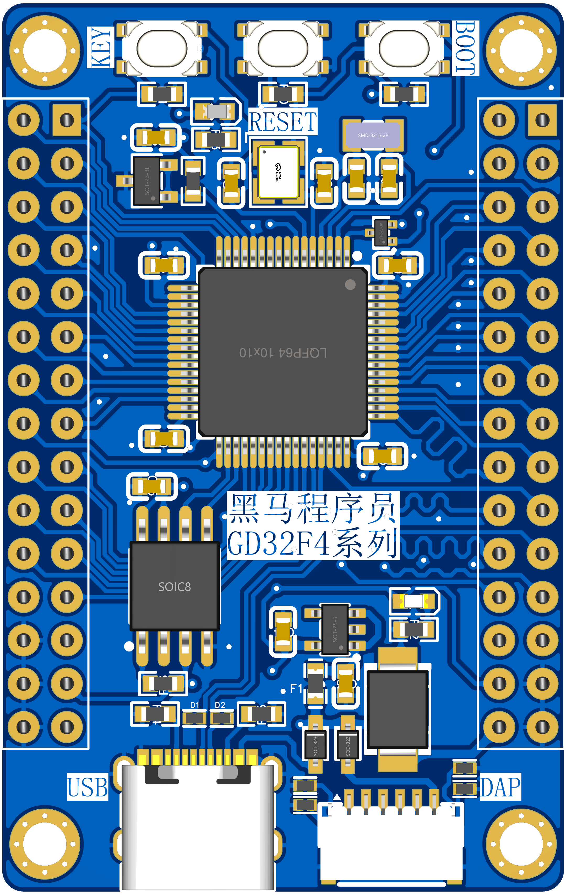

<!DOCTYPE lake>
<p data-lake-id="u7451e3d0" id="u7451e3d0"></p><p data-lake-id="u8efdd047" id="u8efdd047"><a class="yuque-card-link" href="https://baijiahao.baidu.com/s?id=1758425738062892860&amp;wfr=spider&amp;for=pc" rel="noopener noreferrer" target="_blank">bookmarkInline：bookmarkInline</a></p><h2 data-lake-id="wu7Yn" id="wu7Yn"><span data-lake-id="u36d377fb" id="u36d377fb">原理图</span></h2><p data-lake-id="u895c1672" id="u895c1672"></p><p data-lake-id="u58dc699a" id="u58dc699a"><br/></p><h2 data-lake-id="IqMPf" id="IqMPf"><span data-lake-id="u76a5feb1" id="u76a5feb1">降压模块</span></h2><h3 data-lake-id="qFtCv" id="qFtCv"><span data-lake-id="u05e1cd4c" id="u05e1cd4c">低压差稳压器 (LDO)</span></h3><p data-lake-id="uca935905" id="uca935905"><strong><span data-lake-id="u2f4b351e" id="u2f4b351e">优点：</span></strong></p><ul list="u7645ed52"><li data-lake-id="ue185ef5a" fid="u02aa8147" id="ue185ef5a"><span data-lake-id="u521cf687" id="u521cf687">简单设计： LDO的电路</span><strong><span data-lake-id="ucf0eae1e" id="ucf0eae1e">结构相对简单</span></strong><span data-lake-id="u6cbe9e7e" id="u6cbe9e7e">，通常不需要外部电感和输出电容，使得设计和实现相对容易。</span></li><li data-lake-id="u0e2ff818" fid="u02aa8147" id="u0e2ff818"><span data-lake-id="u9ca5dbf8" id="u9ca5dbf8">低噪声： 由于工作原理的特点，LDO的输出通常具有较低的噪声水平，适用于对噪声敏感的应用，如模拟电路。</span></li><li data-lake-id="udf440974" fid="u02aa8147" id="udf440974"><span data-lake-id="ucefe06f8" id="ucefe06f8">线性调整： LDO通过线性调整方式实现电压稳定，有助于提供稳定的输出电压。</span></li></ul><p data-lake-id="u844ffb08" id="u844ffb08"><strong><span data-lake-id="u30fac8dc" id="u30fac8dc">缺点：</span></strong></p><ul list="ua863280a"><li data-lake-id="u180f4b98" fid="uddd60df8" id="u180f4b98"><span data-lake-id="ud65d09ff" id="ud65d09ff">低效率： 在大电压降的情况下，LDO的效率相对较低，因为它通过线性调整方式降低电压，产生的</span><strong><span data-lake-id="u0eb8087c" id="u0eb8087c">功耗较大</span></strong><span data-lake-id="uab34410d" id="uab34410d">。</span></li><li data-lake-id="u4c0b7fbd" fid="uddd60df8" id="u4c0b7fbd"><span data-lake-id="u71d792fc" id="u71d792fc">散热问题： 由于线性调整的方式，LDO在大电压差和高负载情况下可能需要较大的散热器，增加了散热的复杂性。</span></li><li data-lake-id="u326d4700" fid="uddd60df8" id="u326d4700"><span data-lake-id="u5ee8abf8" id="u5ee8abf8">限制电压降： LDO的电压降一般较小，限制了其在大电压差情况下的应用。</span></li></ul><p data-lake-id="u726eceb2" id="u726eceb2"><strong><span data-lake-id="u4d0c2860" id="u4d0c2860">示例型号：</span></strong></p><ul list="u61af683d"><li data-lake-id="uc5e9adc3" fid="u697f8be5" id="uc5e9adc3"><span data-lake-id="ucdcca443" id="ucdcca443">AMS1117</span></li><li data-lake-id="u0142a036" fid="u697f8be5" id="u0142a036"><span data-lake-id="u580aa15d" id="u580aa15d">AMS1117-ADJ</span></li><li data-lake-id="u58421b72" fid="u697f8be5" id="u58421b72"><span data-lake-id="u2722fa9c" id="u2722fa9c">LM1117</span></li><li data-lake-id="ub8ef4b31" fid="u697f8be5" id="ub8ef4b31"><span data-lake-id="u7edd9555" id="u7edd9555">XC6206P332MR</span></li><li data-lake-id="u32618bbb" fid="u697f8be5" id="u32618bbb"><span data-lake-id="u936dfc12" id="u936dfc12">CJ78L05</span></li></ul><p data-lake-id="ub9f729a6" id="ub9f729a6"><span data-lake-id="u2b1247e5" id="u2b1247e5">​</span><br/></p><h3 data-lake-id="G8ZsU" id="G8ZsU"><span data-lake-id="ufcc8047a" id="ufcc8047a">直流-直流转换器 (DC-DC)</span></h3><p data-lake-id="uf4d565f7" id="uf4d565f7"><strong><span data-lake-id="ua32da65f" id="ua32da65f">优点：</span></strong></p><ul list="ubee0f6cd"><li data-lake-id="u9a42c714" fid="u5be2e227" id="u9a42c714"><span data-lake-id="u4af7fd36" id="u4af7fd36">高效率： DC-DC转换器在电压转换时通常具有较高的效率，尤其在</span><strong><span data-lake-id="u1b86260f" id="u1b86260f">大电压差</span></strong><span data-lake-id="u42ef89d8" id="u42ef89d8">和</span><strong><span data-lake-id="u2fe52c07" id="u2fe52c07">大负载</span></strong><span data-lake-id="ua08202b3" id="ua08202b3">时，相对于LDO更能节省能量。</span></li><li data-lake-id="uc96afdea" fid="u5be2e227" id="uc96afdea"><span data-lake-id="u8b5b60e2" id="u8b5b60e2">适应大电压差： 能够适应大电压差，有效地将高输入电压转换为稳定的低输出电压。</span></li><li data-lake-id="u275d1c57" fid="u5be2e227" id="u275d1c57"><span data-lake-id="u8b920238" id="u8b920238">灵活性： 提供了多种拓扑结构和工作方式，适应不同的应用场景和功率需求。</span></li></ul><p data-lake-id="ucb266de5" id="ucb266de5"><strong><span data-lake-id="u4c12a7ec" id="u4c12a7ec">缺点：</span></strong></p><ul list="ufa70ed86"><li data-lake-id="ud3a4edea" fid="u88161e42" id="ud3a4edea"><span data-lake-id="u0c191489" id="u0c191489">复杂设计： DC-DC转换器的电路结构</span><strong><span data-lake-id="u7600c297" id="u7600c297">相对复杂</span></strong><span data-lake-id="uf1c555cf" id="uf1c555cf">，通常需要外部电感和输出电容，设计和调试的难度较大。</span></li><li data-lake-id="u50fcb843" fid="u88161e42" id="u50fcb843"><span data-lake-id="ubc702531" id="ubc702531">成本较高： 由于复杂的电路结构和需要外部元件，DC-DC转换器通常比LDO</span><strong><span data-lake-id="u59a05d99" id="u59a05d99">更昂贵</span></strong><span data-lake-id="u7b5a67cc" id="u7b5a67cc">。</span></li><li data-lake-id="u43104aaf" fid="u88161e42" id="u43104aaf"><span data-lake-id="u04064c0c" id="u04064c0c">可能产生较高噪声： 高频切换可能导致输出噪声，需要采取额外的措施来抑制噪声水平。</span></li></ul><p data-lake-id="uda2f05bc" id="uda2f05bc"><strong><span data-lake-id="u7bdb6159" id="u7bdb6159">示例型号：</span></strong></p><ul list="u58846dab"><li data-lake-id="ue2ec5b5e" fid="u450a5729" id="ue2ec5b5e"><span data-lake-id="ubcd0f79a" id="ubcd0f79a">MT2492</span></li><li data-lake-id="u35b78693" fid="u450a5729" id="u35b78693"><span data-lake-id="u97bde48a" id="u97bde48a">M3406-ADJ</span></li><li data-lake-id="uea307674" fid="u450a5729" id="uea307674"><span data-lake-id="u0e7d40d2" id="u0e7d40d2">XL1509</span></li><li data-lake-id="ua681a486" fid="u450a5729" id="ua681a486"><span data-lake-id="ucb8fc9e2" id="ucb8fc9e2">TLV62569DBVR</span></li><li data-lake-id="u1c4319cb" fid="u450a5729" id="u1c4319cb"><span data-lake-id="u277a1b39" id="u277a1b39">TPS54331DR</span></li></ul><p data-lake-id="u996c2f03" id="u996c2f03"><span data-lake-id="ua6b961de" id="ua6b961de">​</span><br/></p><p data-lake-id="u2a4eb826" id="u2a4eb826"><span data-lake-id="u487c6b13" id="u487c6b13">在选择LDO还是DC-DC转换器时，工程师需要根据具体的应用需求平衡这些优点和缺点。</span></p><p data-lake-id="ue449e547" id="ue449e547"><span data-lake-id="u18c958c2" id="u18c958c2">​</span><br/></p><blockquote class="lake-alert lake-alert-color2" data-lake-id="ucf906571" id="ucf906571"><p data-lake-id="ub5ae0f14" id="ub5ae0f14"><span data-lake-id="u39314857" id="u39314857" style="color: rgb(25, 27, 31)">注：</span></p><p data-lake-id="ud031d2d6" id="ud031d2d6"><span data-lake-id="u2a133725" id="u2a133725" style="color: rgb(25, 27, 31)">DC-DC转换器类型分为：Buck降压型、Boost升压型、Buck-boost降压升压型。</span></p><p data-lake-id="u241eabcd" id="u241eabcd"><span data-lake-id="ue436629e" id="ue436629e" style="color: rgb(25, 27, 31)">这里的降压模块对应的就是Buck降压型DC-DC</span></p></blockquote>